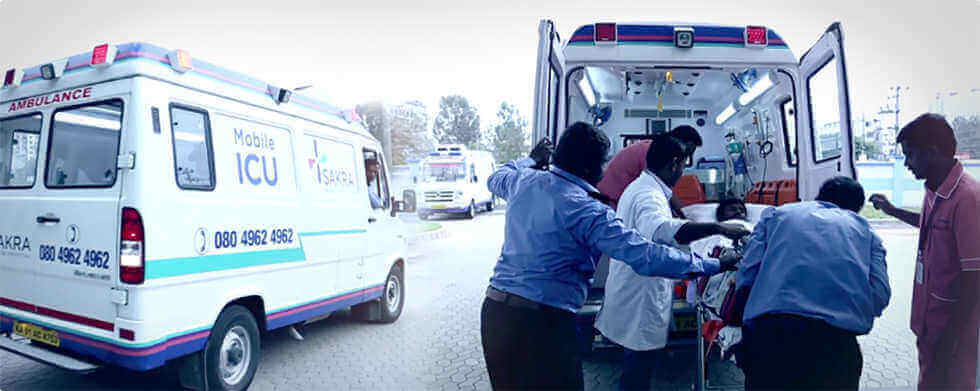

Ambulance Service

Mercy Healthcare Ambulance Service Group provides a diverse range of services to the population of Qatar.
The Ambulance Services emergency response section is the aspect of the service which the majority of people will be most familiar with. This is the section which provides world-class medical care for people in the unfortunate event of a serious, potentially life-threatening incident. However, the Ambulance Service Group also offers a range of other services to support the health of Qatar’s population. These include the Patient Transport Service, Mobile Healthcare Service and the Referral and Booking Management System.
The Ambulance Service Group has grown remarkably this decade, and this growth can be seen not only in the size of its workforce, but in the range of services it provides. Additionally, the quality of service delivered across the group has continued to advance and this has been independently endorsed by multiple international quality and safety accreditations.